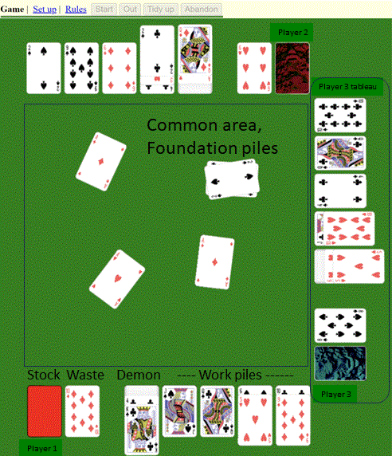

Nerts / Pounce / Racing Demon
The rules on this page are based on the rules at
pagat.com by John McLeod.
The description on that page is based on contributions from Joe Childers,
Scott D Rhodes, Larry Charbonneau, Steven Toillon,
Jesse, Matt Beeken and Adam Joshua Smargon.
Introduction
The game of Racing Demon is also known as Nerts, Nertz, Pounce, Peanuts, Squeal or Scrooge. It is a competitive
game for two or more players, using a pack of cards for each player (or team). The players race to
get rid of the cards from their "Demons" (also known as "Nerts piles" , "Pounce piles", etc. - depending on what
you call the game) by building them from the ace up onto common foundations.
Players and cards
There can be two or more players. It is a very good two-player game, a fun game for three or four.
With five people playing as individuals it begins to get out of hand but with an even number of players
from six upwards you can play a partnership version; partners sit next to each other and share a pack.
In my large family we used to play with more than eight players sometimes.
When the servants played in Downton Abbey theey seemed to have even more.
In this game four is the maximum number of players. On mobile devices it might be two.
Each player or team needs a standard 52-card pack - the cards ranking A(low) 2 3 4 5 6 7 8 9 10 J Q K(high).
Initial setup
Each player deals a Demon (Nerts pile) of thirteen cards in one pile, all face-up. The top card is drawn
slightly back so the next one can be seen. Next to this pile, each player deals four cards face-up,
side by side and not overlapping, to begin four work piles. The remainder of each player's cards are held
face-down as a stock; these cards will be turned three at a time onto a face-up pile, forming the player's
waste pile.
Players need to arrange themselves and their tableaus in a triangle, box, circle, etc. around a
common area that all players can access easily. The common area is where the foundations will be
placed and built on. The initial setup is done automatically as each player joins the game.
The layout of a game of Racing Demon in progress looks something like this:

The play
Play commences when one player touches the Start button. Players play simultaneously as fast as they like, not taking turns, moving cards
around their own tableau according to the rules given below, and where possible building on the
foundations in the common area. The players' main objective is to eliminate their Demons, by
playing cards from them onto their work piles or onto foundations. A player whose Demon is
exhausted may press the Out button, at which point the game immediately ends. Cards which
were in the air return where they came from.
It is not necessary to press Out as soon as your Demon is empty. You may choose to carry on
playing for a while to try to improve your score further.
Players are only allowed to use one finger (or mouse etc) at a time to move cards. Only one card
at a time may be moved, except when moving a block of cards from one work pile to another.
You can only move cards within your own tableau and into the common area. You cannot touch
another player's tableau or take cards out of the common area.
If two or more players try to play to the same foundation at the same time, the first arriving card
stays there, and all other equivalent cards return where they came from. A card does not count as arrived
until the player removes their finger from the card.
You are never forced to play a card if it isn't in your best interest - you can always wait.
Work piles
A player's four work piles begin with one card each. Work piles are built in descending order,
alternating color, overlapping the cards. Thus a red five is placed on a black six, a black
two on a red three on a black four, and so on. You can move any card in one of your work piles
onto another of your own work piles if it fits, and any cards on top of the card
go with it. When a space results, it may be filled by a card from your Demon, your waste pile or
another work pile. The exposed cards of each of the four work piles (i.e. the lowest ranked cards
of each pile) are available to be played onto the foundations.
If one of your work piles is empty, you are allowed to save time by placing a card underneath a
pile if it ranks one higher than the bottom card and is opposite in colour. For example, if you
have a work pile headed by a red jack, and another work pile with nothing in it, and the top
card of your Demon is a black queen, it is permissible to take the black queen and slide it
under the red jack, rather than first putting the black queen in the space and then
moving the whole work pile headed by the red jack on top of it.
Demon
Cards from the top of your Demon can be played onto empty spaces in your work piles.
If they fit, they can also be played onto one of your existing work piles, or they can be played
directly onto a foundation. When your Demon becomes empty, you are entitled to press
the Out button, though you need not do so immediately.
Foundations
Foundations piles are built in the common area. They are always begun with an ace, and can be
built up by playing successively higher cards.
a) With four or more players, cards on a foundation must be of the same suit
(for example the nine of spades on the eight of spades). In this game four is the maximum number of
players.
b) With three players, cards on a foundation must alternate in colour (for example the nine of
spades or clubs on the eight of hearts or diamonds)
c) with two players, cards on a foundation just have to be in sequence. So any nine can be played on any
eight for example.
Players can always start new foundation piles by placing any available ace in the common area.
Other available cards can be played onto an existing foundation where they fit, provided that
another player doesn't get there before you. The cards available for playing to foundation piles
are: the top card of the Demon, the exposed cards (lowest ranked cards) of each work pile, and
the top card of the waste pile. Any player may play onto any foundation. When a foundation is
filled up to king, the pile flies to the side of the table for later scoring. (In a real life
game, the player who played the king must remove that pile from the table.)
Stock and waste pile
You can turn over cards from your stock three at a time and put them face-up onto your waste pile
(the waste pile has no cards at the start of play). Be sure to keep the cards in the same order
when you do so. Touch the stock pile to do this. The top card of your waste pile may be played
to one of your work piles or to a foundation pile if it fits. Once the stock pile is empty, touch
the waste pile and it will turn over, move and become a new stock pile.
If it happens that all players are stuck (no further legal moves), or no one wishes to play any
more cards, then the round may be abandoned if all players press the Abandon button (TBI). (I have
never seen this happening.) If you get stuck but others can still play, you have to wait for
everyone else to get stuck (or decide they do not want to make any more moves). Other versions
of the game apparently get stuck quite frequently, no doubt because of inflexible rules about
playing on foundations.
Scoring
When someone touches Out (or in real life calls "Out!", "Nerts!" or "Pounce!") play ends and
scoring takes place. Each player scores one point for each of their own cards that they
managed to play into the common area. To determine this, the foundation piles have to be sorted
out according to the owners of the cards - this is why it is necessary that the decks have
different backs. All players then subtract one point for every card left in their Demon when play
ended. Thus touching Out does not guarantee the highest score, but more often than not it does
result in a good score since that player subtracts 0 points. The sorting and scoring is all done
automatically as you might expect.
If the round is abandoned (see above) or one player accidentally or deliberately leaves the game (by
closing their browser window), there is no score for that round.
Further deals are played until one or more player's scores reach or pass 100. At this point the
player(s) with the highest score(s) win(s) and a new game may be started.
Tidying
Sometimes the common area becomes so untidy or congested that it becomes necessary to tidy up the
foundation piles. In this game this is done when a player presses the tidy up button (TBI).
Tidying is often necessary in real life and may be necessary in this game if there are many
players and foundation piles are placed very awkwardly.